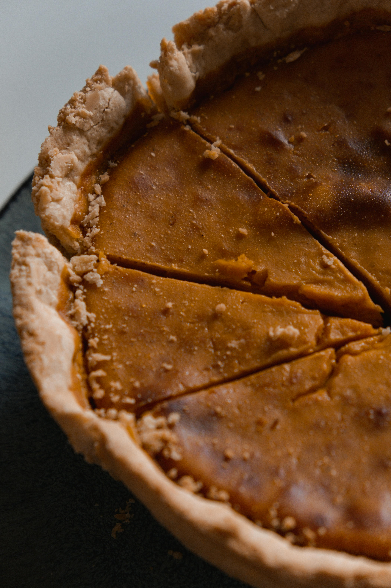

The one where all the leaves fall off.
Autumn Overview

According to the Merriam-Webster dictionary Autumn is defined as "the season between summer and winter comprising in the northern hemisphere usually the months of September, October, and November". This is the one where the weather starts to get colder. It usually starts to rain more, and depending on where you live it might even start to snow. There is an increase in yellow, orange, red, and brown. It is a season define by it's natural beauty and striking bold colors during the few weeks where the leaves are actually still on the trees. Pumpkins and corn stalks may appear around every corner. It is the season of ghosts, scarecrows, campires and Frankensteins in every shop window.
There are many different things that define fall as a favorite season for many. This includes apple picking, pumpkin patches, haunted houses, and corn mazes.
Holidays
There are a handful of holidays in Autumn including Indigeonous People's Day, Veteran's Day, Election Day, Halloween, and Thanksgiving. This webpage will primarily be focusing on Halloween and Thanksgiving since they are the two most commercialized of the Autumn holidays.
Halloween
Halloween, the one day a year you can dress up as whoever you want. Little kids go door to door taking candy from strangers despite their parents warning to never take candy from strangers the other 364 days a year. Haunted houses meant to scare the life out of you. Witches, demons, murderous buthcers, adn escaped mental patients all trying to get you while you're just trying to find the exit.

Best Movies to watch for Halloween:
- It's the Great Pumpkin, Charlie Brown
- Hocus Pocus
- Scream
- Halloween
- The Nightmare Before Christmas
- the Addams Family
- The Conjuring
Origins
Halloween gets its inspiration from an ancient Celtic called Samhain, a pagan religious celebration to welcome the end of summer harvest, at which people would light bonfires and wear costumes to ward off ghosts. When Pope Gregory III declared November 1 All Saints Day some elements of the ancient Celtic festival were incorporated into it, with the day before All Saints Day coming to be known as All Hallows Eve (Halloween). The Celtics also believed that during the festival, spirits walked the Earth and in order to avoid catching the attention of one of the evil spirits walking the Earth the Celts wore scary costumes during the festival to confuse them into being left alone. Black Cats wouldn't come around until the middle ages, when they were considered to be a symbol of the Devil. Trick or Treating would also come around in the middle ages when children and poor adults would go door to door on All Saints Day collecting money and food in return for prayers for the dead.
Thanksgiving
Thanksgiving, you either love it or hate it. A holiday dedicated to spending two days cooking food to eat with family around the dinner table or around the t.v. watching Thursday Night Football. Macy's even closes down 34th street in New York City to take 49 giant character balloons on a walk with a marching band to celebrate the occasion. Or if you don't feel like having the day off, you can participate in your local neighborhood Turkey Trot and run 5 to 10kms instead.
Best Thanksgiving T.V. Specials:
- Thursday Night Football
- Friends: Season 5, Episode 8
- A Charlie Brown Thanksgiving
- The Addams Family Values
Origins
Thanksgiving comemorates the celebratory feast between the Pilgrims and Wompanoag in November of 1621 after a mutual peace agreement had led to a successful harvest, ensuring the survival of both groups for the winter. The feast lasted three days, however it is unkown what the meal fully consisted of. The first official Thanksgiving holiday came in 1777 in commemeration of the American victory agaist the British in the Revolutionary War. George Washington called for this to be on the last Thursday in November.
Is Autumn the best season?
Yes. Autumn features bright colors, cooler weather, while still being warm enough for it to rain rather than snow (depending on where you are). There are also a variety of different autumn related activites to pick from. There is a fair share of the more fun holidays. I can't really think of anything negative to say about autumn, and is easily the best season.